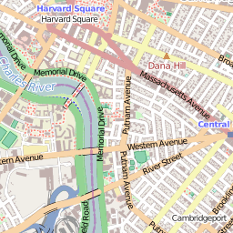
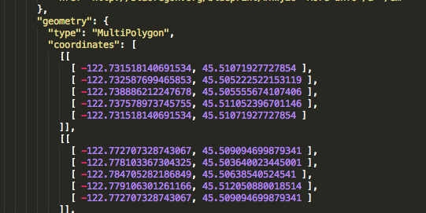
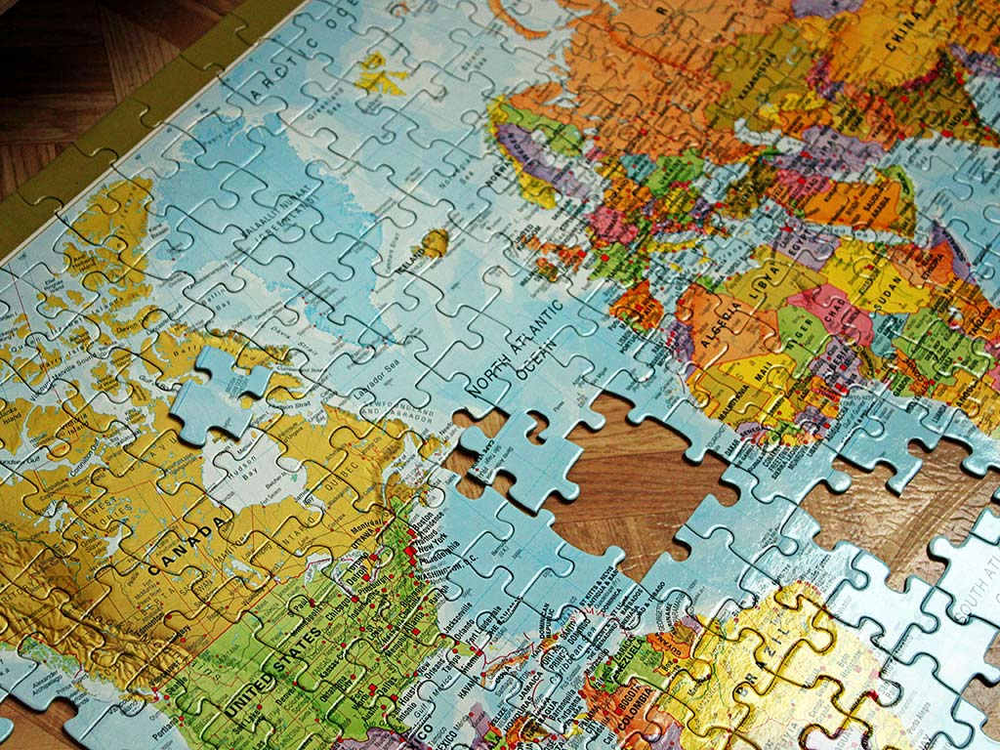
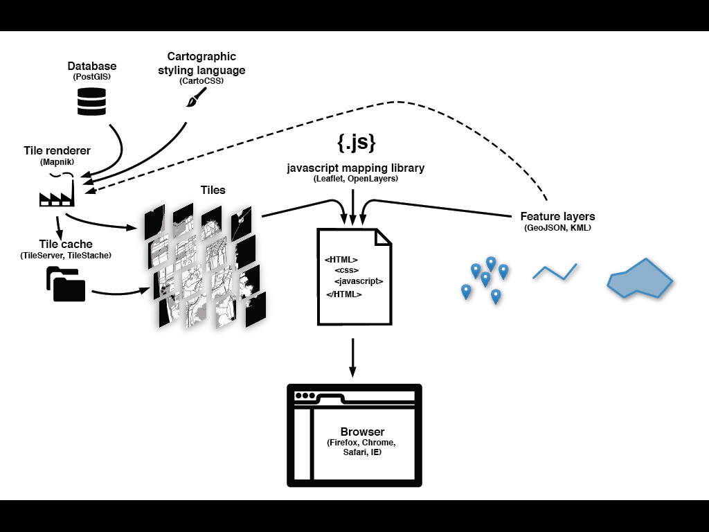

FIRST: Thanks to Alan McConchie, Beth Schechter, and the Maptime team for much of this material!
Anatomy of a Web Map
"Web map" often implies a map that is not simply on the web, but rather one that is powered by the web.
A digital map is on a computer, but may not be accessible by internet, and is relatively static if it is.
A web map depends on the internet. It is usually interactive and not always self-contained.

MapQuest ruled the early days of web maps
Google Maps pioneered what is now sometimes called a "slippy map"
So how does a "slippy map" work?

A "slippy map" is usually made of tiles.

Tiling chops the map into pieces to quickly load only the part of the map in view.
maps.stamen.com

Tiles are usually pre-rendered raster images, although vector tiles are on the rise.

256 x 256 pixels.
Standardized locations.
20ish zoom levels.
zoom, x, y
e.g. .../14/4955/6059.png
Number of tiles at zoom level z:
2z x 2z = 4z
At the resolution of my computer, a world map at zoom 21 would be nearly 78 miles square!
Bing Maps Tile System

Tiled web maps use the Mercator projection.
Wikipedia
The math is simple!
x = λ
y = ln(tan φ + sec φ)

Mercator's map was designed for marine navigation. Lines of constant bearing are straight.

At a local scale, this means that shape and direction are preserved.

A Mercator map of the world is not a map of the world.
ln(tan 90° + sec 90°) = Infinity

Be suspicious of web map comparisons "at the same scale."

So avoid areal representations in web maps at small scale.

Tiles, typically: raster, non-interactive*, used as a base layer
Feature layers, typically: interactive, vector, represent the map's salient data
GeoJSON is a geographic data format that plays well with web maps

How does all this fit together?

